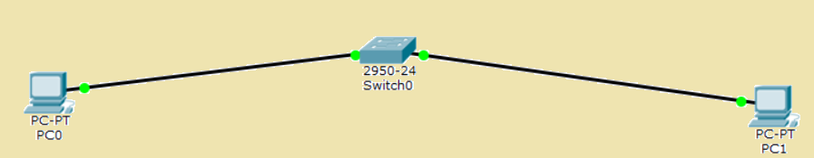
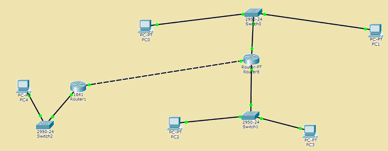
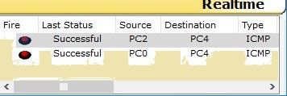

Личная страница по предмету "Интернет технологии"
Саутин Денис, ИДМ 17-04
Необходимо проделать следующие лабораторные работы:
-
Лабораторная работа №1
Экосистема разработки программ с открытым кодом":Создание персональной страницы-отчета на github и работа с git
-
Лабораторная работа №2 "Разработка простого веб-приложения":
Проектирование и разработка индивидуального или коллективного веб-приложения (SPA) с использованием html,css,js + json,xml
-
Лабораторная работа №3 "Настройка локальной сети передачи данных":
Настройка коммутаторов и маршрутизаторов
-
Самооценка прохождения теста по инновациям, формулировка одного вопроса по теме "Интернет-технологии" в одной из форм, встречающихся в тесте (выбор одного, выбор многих, упорядочивание, соответствие)
Лабораторная работа №1
-
Регистрация на GitHub.
-
Создать и загрузить персональную веб страницу-отчет в репозиторий ИДМ-17 по курсу "Интернет-технологии" на GitHub.
Лабораторная работа №2
-
Была сформирована команда для разработки веб-приложения (SPA). Далее были распределены роли.
-
Нашей командой был разработан макет страницы веб-приложения.
Краткое описание работы веб-приложения
Для начала понадобится установить Node.js
Затем необходимо скачать репозиторий:
git clone https://github.com/dreamteamstankin/project
Установка зависимостей:
npm install
После установки нужно запустить работу сервера, для того, чтобы бот понимал запросы и отвечал пользователю, это можно сделать стандартной командой
node app.js
либо nodemon, который отслеживает изменений файла и перезапускает при необходимости сервер
nodemon app.js
Команды, которые выполняет бот:
/напомни %заметка% в hh:mm (при установке времени )
/заметки (вывод всех заметок с заданным временем)
/удалить (удаление заметок с заданным временем)
/курс (курс доллара с yandex.ru)
/запомни (запись заметки без временного ограничения)
/напоминания (вывод всех заметок без временного ограничения)
/удалитьнапоминания (удаление всех заметок без временного ограничения)
-
Был прописан js функционал и реализована возможность чтения json. Ниже приведены ссылки на материал.
Результат:
Лабораторная работа №3
1. Первым делом рассчитаем IP адрес.
2. Настроим адресацию на добавленных компьютерах (разместим два компьютера и коммутатор. Настроим между ними адресацию).
3. Выполняем проверку работоспособности созданой сети.

4. Добавляем на рабочее поле новый коммутатор с двумя компьютерами.
5. Настроим адресацию из другой подсети.

6. Соединяем коммутаторы между собой и снова проверяем работоспособность сети.
7. Настраиваем интерфейсы маршрутизатора. Проверяем работоспособность.

8. На компьютерах одной сети отсутствует информация о маршрутах к другой сети, поэтому необходимо
указать шлюз по умолчанию и отправить сообщение.

9. Проверяем работоспособность сети. Отправляем сообщение из А в C, а далее из В в С.

10. На маршрутизаторах не настроена статическая маршрутизация. Настройка статической маршрутизации осуществлялась с помощью команд:
show ip protocols – выводит расширенную информацию об используемых протоколах маршрутизации;
ip route [сеть назначения] [маска] [маршрут] – добавляет в таблицу маршрутизации статический маршрут до указанной сети назначения.
Banner motd [баннер] – определяет баннерное сообщение.
Все задачи, поставленные в лабораторной работе, были успешно выполнены.
Подготовка к экзамену
Вопрос по теме "Интернет-технологии".
Выберите ОДИН правильный ответ:
В имени «edu.stankin.ru» доменом какого уровня является «stankin»?
- А) Верхнего
- Б) Второго
- В) Третьего
- Г) Промежуточного
Правильный ответ: Б
Прошлогодняя личная страница
Прошлогодняя статья
Новая статья
Проект